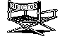
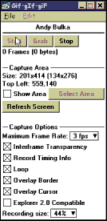
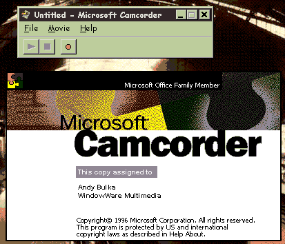
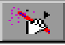

Australian Toolbook User Group



There are quite a few techniques to making demos of screen operations, and running them under software control. The best solution is probably a video (AVI) or animated GIF, which you can then play and control from within Toolbook - see the articles below on how to create them.
Lotus ScreenCam is a another good solution - as long as you don't need total software control (you can run a screen cam, but not inside a window of your own application). ScreenCam offers screen captioning and small file size (it captures windows messages rather than sequences of bitmaps).
 More Utilities
More Utilities
There are some utilities for creating AVI movies from your screen activities on Toolbook 6's 2nd CD (e.g. Cybercam will generate AVI files of your screeen activity - the files become quite large, however.) Digital Video Producer (also on the CD) can then be used to edit the video.
Capturing Screen Activity into an Animated GIF Solution by Andy Bulka

In my opinion, the best solution to creating and running demos under software control (as long as you don't need sound) is to use toolbook 6's ability to run animated GIFS via an ActiveX gif animator. To create the GIFS - use the utility GifgIfgiF. It is a simple little program for making GIF animations of whatever is shown on your Windows screen. See Pedagoguery Software
http://www.peda.com/ggg/
Before I make the animated GIF, I run lotus screen cam and make captions that I can pop up over my screen activity. The captions can include arrows with text etc. I then record the GIF whilst cycling through the screencam captions (I do not record via screen cam, because I use Gif-Gif-Gif to do the screen recording. I only use Screen Cam's captioning facility).
You can create fullsize or nicely scaled (44% & 25%) GIF’s by setting an option on the GIG-GIF-GIF dialog box. The screen captures take remarkably little room – a minutes worth of 25% capture may create a GIF of only 120 k.
You can then edit your GIF using Microsoft Gif Animator or PaintShop Pro 5's Gif-Animation program. Beware - the compression you will get out of these programs will not be as good as an unedited Gif-Gif-Gif.
Screen Recording using Microsoft CamCorder
Question: A few weeks back on this listserv I learned about a free screen capture utility by Microsoft called Camcorder. I downloaded this application from Microsoft's WEB site and tested it out. It's pretty nice and in many ways superior to ScreenCam and CameraMan. It saves sceen movies as either self contained exe files or as AVI files.

Here's the problem: The CamCorder app uses a special compression codec when playing back movies in the AVI format. These AVI files will NOT play back on other machines unless this special codec is installed. There are no instructions as to how to get these decompressor drivers installed on other systems. I've also noticed that simply installing the application on other PC's does not automatically install the compression codec (very strange). The video compression codec is called: VID.CGDI: Microsoft Camcorder Reader Codec (CGDI). I've already captured several movies that I want to play on other PC's and am unable to play them back.
If anyone has used CamCorder and knows more than I do about it's compression codecs I'd appreciate some help. I also visited Microsoft's WEB site and can not find any trace of the the utility. (Who would I call at Microsoft to find out more about the product). Also, if you know of a better screen caputure utility I'd be interested in your recommendations. - Les Howles
Free download
Microsoft are actually giving away this screen recording software. Works on win95 and NT.
http://www.microsoft.com/office/office97/camcorder/sysreq.htm
The CamCorder home page URL:
http://www.microsoft.com/office/office97/camcorder/
My tests show that you are correct. I installed MS Camcorder. Put it through its paces (pursuant to the type of work I wanted it to do) I then decided that it was not up to the task and uninstalled it. This is what I found:
1. It does install its own codec. I found this out at uninstall time because I ended up having to manually remove the codec.
2. It does indeed save as an .AVI file but it must be used on an "as is" basis. I.e. you cannot load it into Premiere and edit it , add titling transitions or a sound track. It shows up in the construction window as blank black frames. It will not load in other video editors either.
3. As long as Camcorder was installed the .AVIs on my web site showed up as white rectangles when viewed in MSIE 3.01. This is all very sad as I really liked its speed , ease of use and smoothness of playback.
I really need an app like this in my work, but ONLY IF numbers 2&3 above do not obtain.
Please note that I do not have any problems playing back the exe files created with MS Camcorder (actually these are very nice). The problem seems to kick in with the type of AVI files the application produces. It doesn' t appear to be using your standard RLE encoded AVI format. I think Microsoft is using some other codec.
This sounds like the same problem I'm running into (see the other posts on this listserv). For some unknown reason I have CamCorder installed on one of our PC's and it's capturing and playing videos just fine in the AVI format. However, none of those same AVI files produced with CamCorder will play on other PC's (all Windows 95). I get an error message that the proper drivers are not installed. I checked the video compression codecs installed on the one machine that plays back the CamCorder screen caps and I noticed the codec "VID.CGDI:Microsoft CamCorder Reader Codec (cgdi). It appears as if this codec needs to be installed on any machine you want to play back CamCorder produced AVI files. Very strange though that when I installed the CamCorder application on a few other PC's the drivers were not installed. It's a mystery to me how to get the compression codec installed on the other systems.
Try this screen recorder utility: HyperCam. It works on Win 3.1, Win95, WinNT. It records screen movement to an avi file. It is shareware, but I think is records a clean avi, no special codecs required. Find it at:
http://www.hyperionics.com
I tested out HyperCam. Microsoft's CapScrn (not to be confused with CamCorder) is better and free. I found HyperCam somewhat slow particularly in capturing WWW screens. CapScrn and HyperCam both do poorly with 16 bit color. CamCorder was excellent at 16 bit color screens but you know the rest of the story...
The following is an excerpt from:
http://www.microsoft.com/office/officenews/961209/camcorder/camcord.htm
The movies can be saved as an AVI file or as an EXE file.
Other users with Camcorder can play the AVI file. The EXE file is portable - people can play it back even if they don't have Camcorder installed on their machine.
The EXE format is compressed by approximately 40 percent, so the file size is relatively small for a movie. The movie player is included in the EXE file, so the person receiving the file can play the movie on any Windows 95 or Windows NT 3.51 or higher computer without Camcorder or any other program being installed. Movies can be recorded on computers running the Windows 95 operating system, but not on Windows NT.
Capturing the screen to the clipboard using Openscript
Question: How can I force the Print Scrn event from within openScript?
Answer: Solution by Jeff Parkes
This will copy the active window:
get sendKeys("{wait 100}%{keycopy}",1)
This should copy the whole screen (% adds the Alt key):
get sendKeys("{keycopy}",1)
You need to link the DLL like this first:
linkDLL "tb40win.dll"
INT sendKeys (STRING, INT)
End
The trick above is that the key value you send is not the key value you might expect to send. You expect to have to send keyPrint, but investigation reveals the actual key message sent when you hit the PrintScreen key is keyCopy, as Jeff indicates.
Using Hardware to Capture Screen Activity to TV or Video Solution by Tom Hall
I have used a product called AverKey 3 that sells for around $300 US as a VGA to PAL/NTSC converter. I have been fairly pleased based upon the price I paid. I really like the zoom and pan features of this device using its remote control. The only thing is now if I use this, I find myself with the mouse in one hand and the remote in the other all the time. I connect this to a 30" TV and get good results as well as to a standard video projector that I can then project to a 6 ft screen. This is a good device to take on the road because it is just a little black box with cables and remote. I really don't do anything different in the setup of my books for this type of display. The specs show that it is compatible with standard VGA modes up to 800 x 600, and has both composite and S-Video outputs.
P.S. The Averkey is an external device that takes everything on your computer screen and converts it to a video signal which you can play directly on your TV or capture on your video recorder. It is a hardware only solution and requires no drivers (thank goodness!). It comes with a remote control which allows you to pan and zoom.
If you want to incorporate these videos into software, you of course can then use a video capture device to create AVI files and play them through Toolbook. - Andy
Simulation - Electronic "chalk"

Question: I am trying to set up a way to draw a freehand line in toolbook (at the reader level) to use as electronic chalk during presentations. It could be activated from a button or icon or from the menu. I would like it to work using a rightbuttondown handler. Has anyone tried something similar with any luck? I am using version 3.0.
Here's an "off the cuff" approach:
to handle rightButtonDown
system s_chalkOn, s_startPos
set s_chalkOn to TRUE
clear s_startPos
end
to handle buttonStillDown loc
system s_chalkOn, s_startPos
if s_chalkOn
if s_startPos <> NULL
draw line from s_startPos to loc
end
set s_startPos to loc
end
end
to handle rightButtonUp
system s_chalkOn
set s_chalkOn to FALSE
end
to handle clearChalk
select all line
send clear
end
Try this script. Its a little slow but its get pretty close to doing what you want. I just put all this script in the page level. Although this script is 3.0 syntax. There is no reason this same idea wouldn't work in older versions of Toolbook.
to handle buttonDown loc
system MyLines
if myLines = null
myLines = ""
end
draw angledLine from loc to loc
set lineStyle of selection to "2"
push selection onto MyLines
end
to handle buttonStillDown loc
system myLines
if itemCount(vertices of selection) < 20
vertices of selection = \
vertices of selection&","&loc
else
vertices of selection = \
vertices of selection&","&loc
draw angledLine from loc to loc
set lineStyle of selection to "2"
push selection onto MyLines
end
end
--This part just removes the lines.
to handle RightbuttonUp
system MyLines
step i from 1 to itemCount(myLines)
select item i of MyLines
send cut
end
myLines = ""
end
Simulating a moving cursor
Andy Bulka
Use Toolbook's path animation facility to animate a bitmap of a cursor moving across the screen, clicking on things.
You create several path animations for the same cursor bitmap then play them one after another. Painstaking, but it works. See the demo book that comes with Toolbook Assistant to see this method used to great effect.
Simulating pressing a button
Question: I am developing a self-demo program and want to simlulate the mouse being moved and buttons being clicked. I tried the "Record" feature but it fails to
record anything in "Reader" mode, and in any case, it doesn’t show buttons being depressed or the mouse cursor moving. All I can think of doing is writing hundreds of scripts like:
mouseposition of this window =3000,3000
pause 20
mouseposition of this window= 2800,2800
pause 20
.....
And to make toolbook buttons depress:
mouseposition of this window =300,400 -- but pos invert of button "1" of this background = true pause 1 seconds invert of button "1" of this background = false send buttonClick to button "1" of this background
It's too complex to develop a self-demo program in this way. I think it will be simpler if Toolbook provide a command like:
press button "1"
You are on the right track with your script to set sysMousePosition and then Invert the button. There is not a built in command like "press button 1" like you asked for but you can write such a function. I got the mvCursor script from the mmTour.tbk sample book that came with MTB 1.53.
to handle simulateButtonClick objRef, initialCursorPosition, iterations, pauseTicks
if isObject(objRef) and object of \
objRef is "button"
centerPos = (item 1 of size of objRef / 2) \
+ item 1 of position of objRef, \
(item 2 of size of objRef / 2) + \
item 2 of position of objRef
if initialCursorPosition is null
initialCursorPosition = sysMousePosition
end
if pauseTicks is null
pauseTicks = 0
end
if iterations is null
iterations = 20
end
send mvCursor initialCursorPosition, \
centerPos, iterations, pauseTicks
set invert of objRef to TRUE
pause 3*pauseTicks
set invert of objRef to FALSE
send buttonClick to objRef
end
end
to handle mvcursor initialPos, endPos, iterations, PauseTicks
x1 = item 1 of initialPos
y1 = item 2 of initialPos
x2 = item 1 of endPos
y2 = item 2 of endPos
set ydif to (y1-y2)/pi
set xdif to (x2-x1)/2
if ydif < 0
set ArcDirection to 1
else
set ArcDirection to -1
end
set theta to pi
set incr to pi/iterations
while theta > 0
set y to ydif*(theta + ArcDirection \
* sin(theta))+y2
set x to xdif*(1+cos(theta))+x1
decrement theta by incr
set sysmouseposition to x,y
pause pauseTicks ticks
mmYield
end
set sysmouseposition to x2,y2
-- to cover any roundoff error
end
To use it place the scripts in the book or a system book and just sent simulateButtonClick. To press a button named "OK" you send simulateButtonClick button OK, null, 50, 10
There are much easier and more elegant ways to handle simulated mousemove and mouseclicks for demo books. Take a look at the script in the CBT Tutor book that handles cursorMove.
Specifically, this Asymetrix script is:
to handle cursorMove x2, y2
system sRate
x1 = item 1 of sysMousePosition
y1 = item 2 of sysMousePosition
dX = x2-x1
dY = y2-y1
hyp = Hypotenuse(abs(x2-x1),abs(y2-y1))
dur = hyp/sRate
time = User_GetTicks() -- in ticks
elapsed = 0
while elapsed <= dur and dur <> 0
percent = elapsed/dur
sysMousePosition = (dX*percent) \
+ x1, (dY*percent) + y1
send cbtPause 1
elapsed = User_GetTicks() - time
mmYield
end
sysMousePosition = x2,y2
send cbtPause 500
end
You'll also have to incorporate the cbtPause handler in the book but this works very nicely and I've stolen the code on more than one occasion. In fact the whole CBT demo book is a good tutorial. If you haven't gone through it before and looked at scripts, it's well worth the time.
To access thousands more tips offline - download Toolbook Knowledge Nuggets